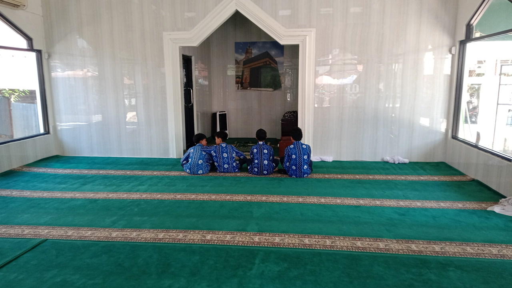
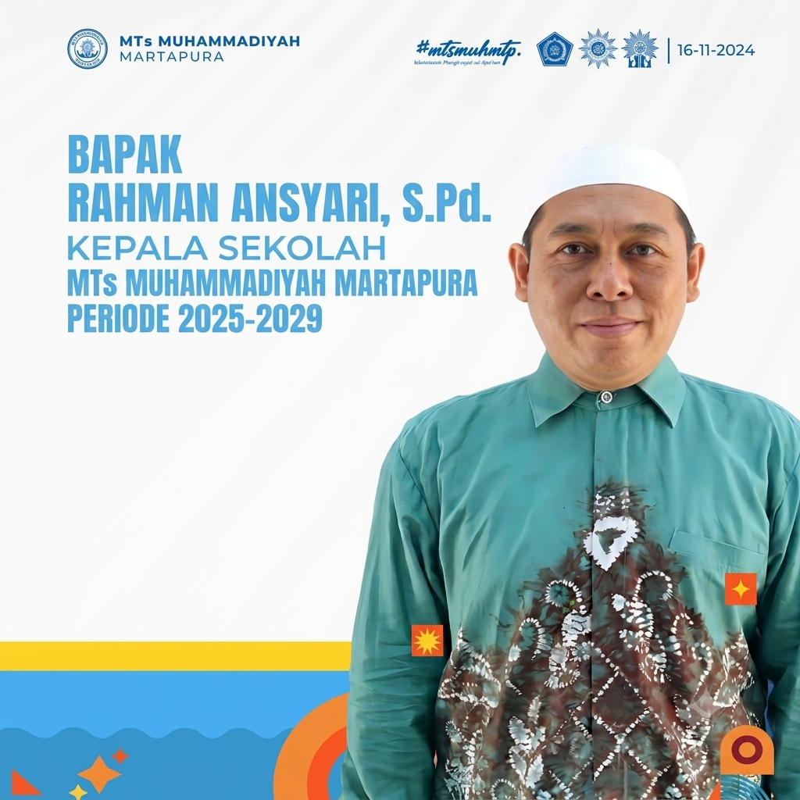

MEMBANGUN GENERASI ISLAM YANG SEBENAR-BENARNYA
MENDIDIK PESERTA DIDIK BERAQIDAH KUAT, RAJIN BERIBADAH DAN FASIH MEMBACA AL-QUR'AN.




Assalamu'alaikum Warahmatullahi Wabarakatuh.
Selamat datang di website resmi MTs Muhammadiyah Martapura. Melalui media ini, kami berharap dapat memberikan informasi yang akurat dan transparan terkait kegiatan akademik, kesiswaan, dan perkembangan sekolah kepada seluruh wali murid dan masyarakat luas.
Mari kita wujudkan generasi islami yang sebenar-benarnya. Wassalamu'alaikum Warahmatullahi Wabarakatuh.
Memuat artikel...